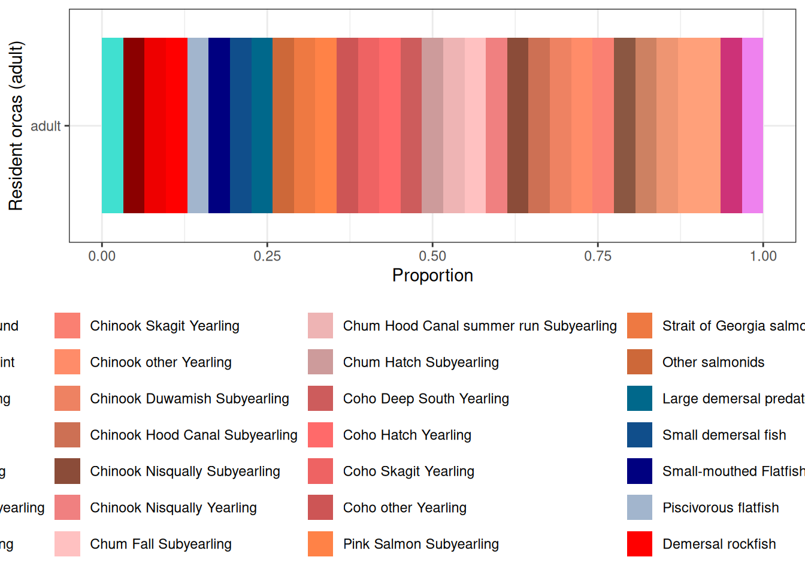

Installing package into '/home/runner/work/_temp/Library'
(as 'lib' is unspecified)Loading required package: devtoolsLoading required package: usethisLoading required package: readxlLoading required package: spLoading required package: rnaturalearthLoading required package: rnaturalearthdata
Attaching package: 'rnaturalearthdata'The following object is masked from 'package:rnaturalearth':
countries110Loading required package: herehere() starts at /home/runner/work/psatlantismodelupdates/psatlantismodelupdatesLoading required package: rasterError: package or namespace load failed for 'raster' in dyn.load(file, DLLpath = DLLpath, ...):
unable to load shared object '/home/runner/work/_temp/Library/terra/libs/terra.so':
libproj.so.25: cannot open shared object file: No such file or directoryLoading required package: exactextractrError: package or namespace load failed for 'exactextractr' in dyn.load(file, DLLpath = DLLpath, ...):
unable to load shared object '/home/runner/work/_temp/Library/terra/libs/terra.so':
libproj.so.25: cannot open shared object file: No such file or directoryLoading required package: glmmTMBLoading required package: knitrLoading required package: rlang
Attaching package: 'rlang'The following object is masked from 'package:data.table':
:=Loading required package: ggrepelLoading required package: mapviewError: package or namespace load failed for 'mapview' in dyn.load(file, DLLpath = DLLpath, ...):
unable to load shared object '/home/runner/work/_temp/Library/terra/libs/terra.so':
libproj.so.25: cannot open shared object file: No such file or directoryLoading required package: formattableLoading required package: RColorBrewerLoading required package: stringiLoading required package: stringrLoading required package: R.utilsLoading required package: R.ooLoading required package: R.methodsS3R.methodsS3 v1.8.2 (2022-06-13 22:00:14 UTC) successfully loaded. See ?R.methodsS3 for help.R.oo v1.27.1 (2025-05-02 21:00:05 UTC) successfully loaded. See ?R.oo for help.
Attaching package: 'R.oo'The following object is masked from 'package:R.methodsS3':
throwThe following objects are masked from 'package:rlang':
abort, llThe following objects are masked from 'package:devtools':
check, unloadThe following objects are masked from 'package:methods':
getClasses, getMethodsThe following objects are masked from 'package:base':
attach, detach, load, saveR.utils v2.13.0 (2025-02-24 21:20:02 UTC) successfully loaded. See ?R.utils for help.
Attaching package: 'R.utils'The following object is masked from 'package:rlang':
envThe following object is masked from 'package:tidyr':
extractThe following object is masked from 'package:utils':
timestampThe following objects are masked from 'package:base':
cat, commandArgs, getOption, isOpen, nullfile, parse, use, warningsLoading required package: magrittr
Attaching package: 'magrittr'The following object is masked from 'package:R.utils':
extractThe following object is masked from 'package:R.oo':
equalsThe following object is masked from 'package:rlang':
set_namesThe following object is masked from 'package:tidyr':
extractLoading required package: future
Attaching package: 'future'The following object is masked from 'package:R.utils':
resetLoading required package: parallelLoading required package: formatRRows: 73 Columns: 28
── Column specification ────────────────────────────────────────────────────────
Delimiter: ","
chr (5): OldCode, Code, Name, Long Name, GroupType
dbl (23): Index, IsTurnedOn, NumCohorts, NumGeneTypes, NumStages, NumSpawns,...
ℹ Use `spec()` to retrieve the full column specification for this data.
ℹ Specify the column types or set `show_col_types = FALSE` to quiet this message.